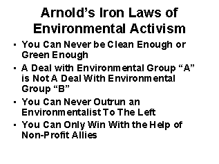

Center
for the Defense of Free Enterprise
Center
for the Defense of Free Enterprise
Ron Arnold gives Petfood Forum advice in Chicago conference
HOME ISSUES OPPOSITION PROJECTS DEFENDERS WISE USE BOOKSTORE ARCHIVE
|
|
|
HOME ISSUES OPPOSITION PROJECTS DEFENDERS WISE USE BOOKSTORE ARCHIVE |
RON ARNOLD gave a presentation titled, "Tracking the Opposition to the Petfood Industry" at the Pet Food Forum, sponsored by Petfood Industry publications, a conference held in Chicago on March 30, 2004.
Arnold began with a warning: "Today, animal rights activists are hitting pet ownership and petfood companies like IAMS and Menu hard."
Noting that the Center for the Defense of Free Enterprise actively tracks this opposition, Arnold said, "We see whos bringing lawsuits against industry, whos lobbying Congress, whos organizing protest demonstrations and personal harassment, whos advocating violence, and whos firebombing animal research labs."
Then the Center takes action exposing the activists and educating the public:
 |
|
When possible criminal activity is involved, the Center notifies the proper authorities:
 |
After detailing steps the petfood industry can take to defend itself from animal rights movement attack, Arnold closed with his concise assessment of the opposition:
 |
RETURN TO CENTER FOR THE DEFENSE OF FREE ENTERPRISE HOME PAGE